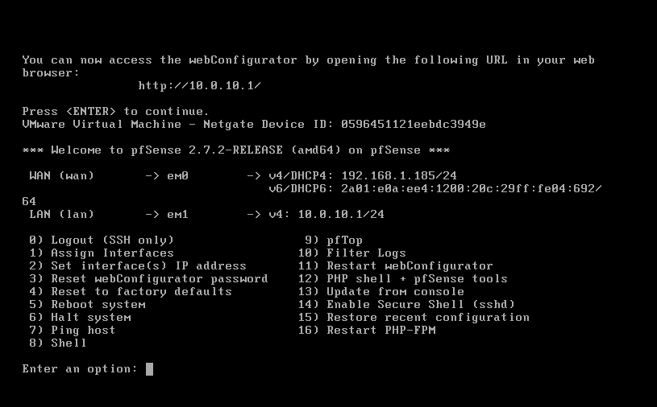
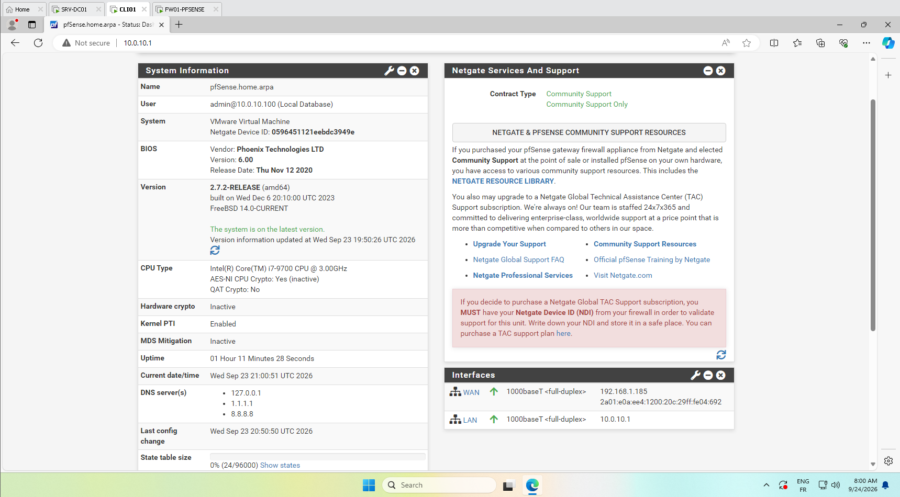
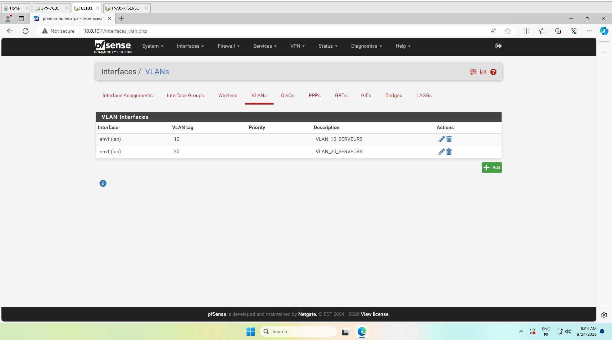
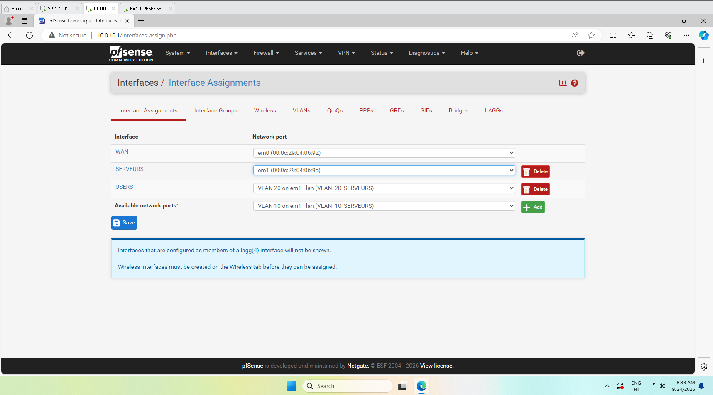
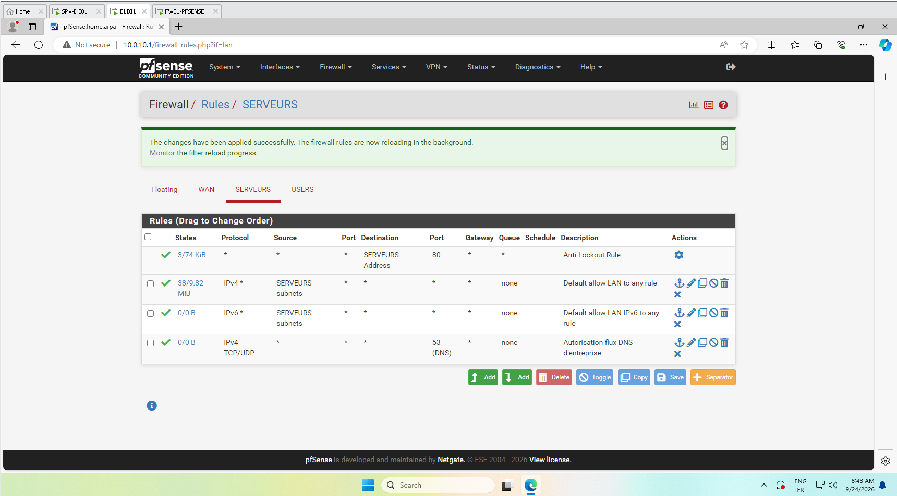
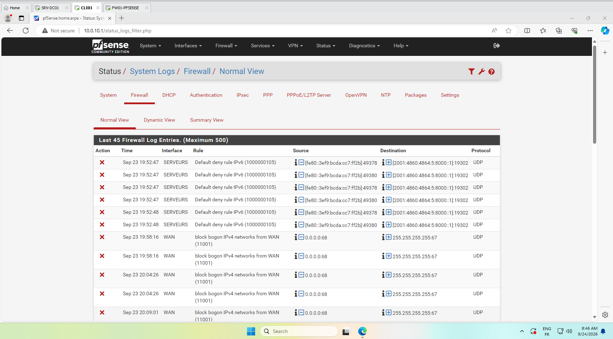

Lab 3 : Sécurité Périmétrique & Segmentation Réseau (pfSense 2.7)
Objectif d'ingénierie : Ce laboratoire documente l'insertion d'un pare-feu/routeur d'entreprise pfSense Community Edition 2.7.2 au sein de l'infrastructure virtuelle afin d'assurer le routage inter-VLANs, le cloisonnement des zones de sécurité (Serveurs vs Utilisateurs) et l'application d'une matrice de filtrage Zero Trust auditée par les journaux système.
1. Topologie Réseau & Configuration des Interfaces
Le pare-feu assure la séparation physique et logique entre le réseau externe (WAN relié à la passerelle) et les sous-réseaux internes isolés :
| Interface | Type | Nom Assigné | Réseau / Masque | Rôle opérationnel |
|---|---|---|---|---|
em0 |
Physique | WAN | 192.168.1.185/24 (DHCP) |
Accès Internet externe et passerelle amont |
em1 |
Physique | SERVEURS | 10.0.10.1/24 (Statique) |
Passerelle du réseau contrôleur AD (SRV-DC01) |
em1.20 |
VLAN 802.1Q | USERS | 10.0.20.1/24 (Statique) |
Passerelle étanche des postes collaborateurs |
Configuration validée en console système FreeBSD :

Supervision de l'état des interfaces sur le Dashboard pfSense :

2. Segmentation Logique par VLANs (Norme IEEE 802.1Q)
Pour isoler les serveurs critiques des machines clientes et prévenir les déplacements latéraux d'éventuels attaquants, des étiquettes VLAN (Tags 802.1Q) ont été définies sur l'interface parentale em1 :
- VLAN 10 : Zone dédiée aux contrôleurs de domaine et services centraux.
- VLAN 20 : Zone réservée aux postes utilisateurs et terminaux nomades.

Assignation définitive des interfaces virtuelles routables :

3. Matrice de Filtrage Pare-Feu (Politique Zero Trust)
Par défaut, tout trafic non explicitement autorisé est rejeté (Implicit Deny). Une matrice de filtrage d'entreprise a été implémentée sur les interfaces internes :
- Flux DNS & Résolution de Noms : Autorisation exclusive des flux UDP/TCP sur le port 53 vers le serveur DNS d'entreprise
10.0.10.10. - Flux d'Authentification Active Directory : Autorisation du protocole Kerberos (Port 88) et LDAP (Port 389).
- Flux Web : Autorisation des protocoles HTTP (80) et HTTPS (443) vers la passerelle WAN.

4. Audit & Analyse des Journaux de Blocage (System Logs)
Le moteur de filtrage à états (Stateful Packet Inspection) inspecte chaque en-tête de paquet IP. Les tentatives de scan de ports non sollicitées et les paquets non conformes sont immédiatement neutralisés et consignés dans les journaux de sécurité en temps réel :

Bilan Opérationnel du Projet 3 :
Ce déploiement valide la capacité à architecturer un réseau d'entreprise compartimenté : la passerelle pfSense garantit la rupture protocolaire, les flux inter-VLANs sont régulés par des règles d'inspection d'état strictes et la traçabilité des accès est assurée par l'audit continu des journaux de sécurité.